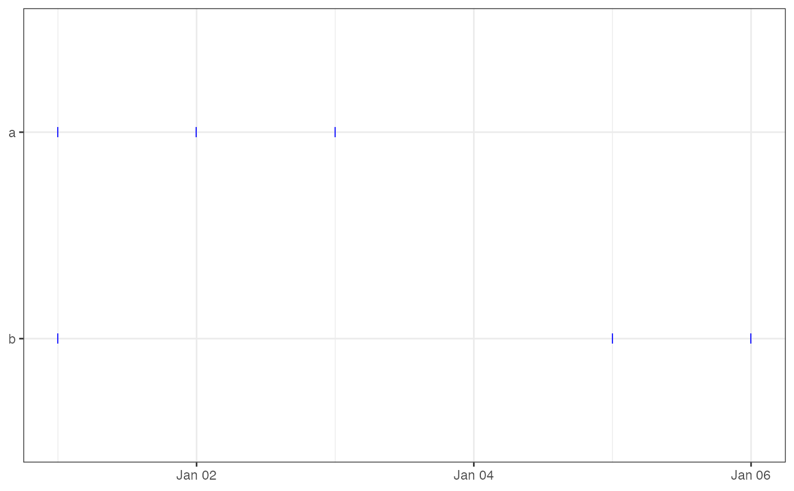

Creates a timeline plot showing fix events as horizontal tick marks for each individual. This allows a quick visual assessment of tracking effort, fix density, and coverage gaps.
Usage
ez_fix_rate_plot(
data,
date_breaks = NULL,
date_format = NULL,
start_date = NULL,
end_date = NULL
)Arguments
- data
A data frame or `sf` object with columns `id` and `timestamp`.
- date_breaks
Optional. Spacing of x-axis breaks (e.g., "1 month", "2 weeks"). If `NULL`, ggplot2 chooses automatically.
- date_format
Optional. Format string for x-axis date labels (e.g., "%b %Y", "%d-%m"). If `NULL`, ggplot2 chooses automatically.
- start_date
Optional. A `Date` or string (e.g., "2024-01-01"). Filters out fixes before this date.
- end_date
Optional. A `Date` or string (e.g., "2024-12-31"). Filters out fixes after this date.
Examples
df <- data.frame(
id = rep(c("a", "b"), each = 3),
timestamp = as.POSIXct(c("2025-01-01", "2025-01-02", "2025-01-03",
"2025-01-01", "2025-01-05", "2025-01-06"))
)
ez_fix_rate_plot(df)
